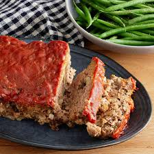

Easy Meatloaf

Description
Who doesn't love a good meatloaf, am i right? This recipe is delicious and it's super easy. Make this tonight for your family and they'll be asking for seconds!
Ingredients
- 1 1/2 pounds ground beef
- 1 large egg
- 1 onion, chopped
- 1 cup milk
- 1 cup dried bread crumbs
- salt and pepper to taste
- 1/3 cup ketchup
- 2 tablespoons brown sugar
- 2 tablespoons prepared mustard
Steps
- Preheat oven to 350 degrees Fahrenheit. Lightly grease 9x5-inch loaf pan.
- Combine ground beef, onion, milk, bread crumbs, and egg in a large bowl; season with salt and pepper. Transfer into prepared loaf pan.
- Mix ketchup, brown sugar, and mustard together in small mixing bowl until well combined; pour over meatloaf and spread it evenly over the top.
- Bake in preheated oven until no longer pink in the center, about 1 hour. (Consider using a probe thermometer, and cook until 150 degrees Fahrenheit, the meatloaf will increase temperature while resting.)